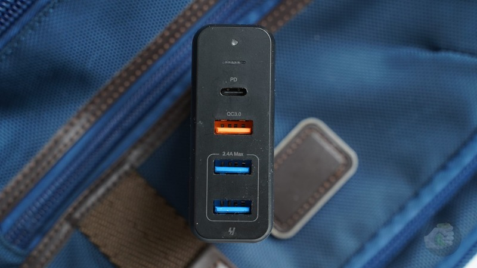

Про зарядки для iPhone: как быстро заряжать телефон
Опыт использования полезных вещей
Зарядок у меня великое множество, но есть несколько главных и основных, вот о них и хочу поговорить. Главное, чтобы адаптер питания поддерживал быструю зарядку, в противном случае использовать его в паре с айфоном становится неудобно.
Проводная зарядка поменьше
В моём рюкзаке всегда лежит блок питания Apple на 18 Вт. Этот маленький и мощный зарядник — оптимальная вещь для покупки. Как показали испытания, по скорости он мало уступает более навороченным зарядкам на 30 и более ватт, а стоит не так дорого. В пару к iPhone с поддержкой быстрой зарядки — самое то. Напомню, что быстрая зарядка появилась в iPhone 8 и iPhone X, ну и во всех новых моделях, разумеется, она присутствует.
Раньше я любил адаптеры для iPad на 10 и 12 Вт, но они без поддержки быстрой зарядки, так что перешёл на 18-ваттный. Такой идёт в комплекте вместе с iPad Pro или iPhone 11 Pro. Во всех остальных случаях, когда покупаете iPhone XS, iPhone 11 или iPhone SE, его не получите, придётся покупать отдельно. Причём учтите, что этот блок работает в паре с кабелем USB Type-C на Lightning, вместе с блоком питания в комплекте его нет и нужно покупать отдельно. Маленький, быстрый, удобный — лучше не найти, это самая удобная из современных зарядок Apple для мобильных устройств.
Цена: 3000 рублей.
Проводная зарядка побольше
Долгое время я добавлял к своим вещам в багаж и массивную док-станцию Satechi, а потом перешёл на зарядку полегче. Теперь в поездки я беру универсальный адаптер Native Union Smart Hub 45 Вт. Он относительно небольшой, подключается к розеткам трёх типов — в комплект входят несколько переходников с вилками под разные регионы.
Бархатистая поверхность зарядки собирает пыль Адаптер поддерживает Power Delivery, поэтому можно использовать все прелести быстрой зарядки на iPhone, если подключить кабель Lightning — USB Type-C к USB Type-C разъёму на 30 Вт. Также тут пара классических USB-A, каждый на 12 Вт. Всего получаем три разъёма.
Всем хорош, только легко пачкается: у него корпус с приятным бархатистым покрытием, рифлёная текстура — великий пылесборник. На работу, как говорится, не влияет, но эстеты обязательно обратят на это внимание в процессе использования.
Цена: 5990 рублей или $60 в Америке без учёта налогов.
Док-станция с проводами
Универсальному зарядному блоку Satechi на 65 Вт уже несколько лет, у меня были аналоги производства Anker, потом как-то незаметно для себя перебрался на Satechi.
Кстати, недавно появилась более мощная версия зарядного устройства. Блок стал чуть крупнее, зато выдаёт 108 Вт! Иными словами, это сверхмощная зарядка, которая и MacBook Pro 16 запитает, и другие устройства. Но вернусь к той, что есть у меня — она слабее и в сумме выдаёт 75 Вт.
Итак, тут четыре порта: один Type-C с поддержкой Power Delivery, пара USB-A и ещё один USB-A, но с поддержкой Quick Charge. Причём в продаже можно встретить вариант с двумя Type-C и парой USB-A, мне он видится более интересным предложением.
Блок питания служит мне верой и правдой, не перегревается, никаких звуков во время работы не издаёт — в общем, отличная штука. Работает идеально, остаётся только протирать пыль с пластикового корпуса, периодически поднимая её с пола.
Цена: 5000 рублей, $65 в Америке без учёта налогов.
Какой кабель выбрать?
Я отношусь к тем, у кого не было вообще никаких проблем с кабелями Lightning. Какие-то порвались, но это от возраста и ветхости, какие-то погрызла дочка, интересуясь предметами окружающего мира. Но как пользовался оригинальными кабелями Apple, так и продолжаю, разве что перешёл на те, что с Type-C для использования прелестей быстрой зарядки.
Я пробовал Baseus, они дешёвые, но с iPhone XS и iPhone 11 Pro почему-то не работали, хотя с iPhone X проблем не было. Проверять на себе, будет работать аксессуар или нет, уже не хочется, проще сразу купить проверенное решение и не знать проблем.